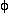

Recall from Chapter 2 that the Fourier transform is a mathematical technique for converting time domain data to frequency domain data, and vice versa.
 Fourier transforming this gives peaks at both +
Fourier transforming this gives peaks at both + and -
because the FT can not distinguish between a +
and a -
rotation of the vector from the data supplied.
and -
because the FT can not distinguish between a +
and a -
rotation of the vector from the data supplied.
A plot of My as a function of time is a -sine function.
Fourier transforming this gives peaks at + and -
because the FT can not distinguish between a positive vector rotating at +
and a negative vector rotating at -
from the data supplied.
The solution is to input both the Mx and My into the FT. The FT is designed to handle two orthogonal input functions called the real and imaginary components.
Detecting just the Mx or My component for input into the FT is called linear detection. This was the detection scheme on many older NMR spectrometers and some magnetic resonance imagers. It required the computer to discard half of the frequency domain data.
Detection of both Mx and My is called quadrature detection and is the method of detection on modern spectrometers and imagers. It is the method of choice since now the FT can distinguish between
+ and -, and all of the frequency domain data be used.


Think of f( ) as the overlap of f(t) with a wave of frequency
.
) as the overlap of f(t) with a wave of frequency
.

This is easy to picture by looking at the real part of f() only.

Consider the function of time, f( t ) = cos( 4t ) + cos( 9t ).
To understand the FT, examine the product of f(t) with cos(t) for
values between 1 and 10, and then the summation of the values of this product between 1 and 10 seconds. The summation will only be examined for time values between 0 and 10 seconds.
|
=1
|
|
=2
|
|
=3
|
|
=4
|
|
=5
|
|
=6
|
|
=7
|
|
=8
|
|
=9
|
|
=10
|
|
f()
|
The inverse Fourier transform (IFT) is best depicted as an summation of the time domain spectra of frequencies in
f().
The actual FT will make use of an input consisting of a REAL and an IMAGINARY part. You can think of Mx as the REAL input, and My as the IMAGINARY input. The resultant output of the FT will therefore have a REAL and an IMAGINARY component, too.
Consider the following function:
In FT NMR spectroscopy, the real output of the FT is taken as the frequency domain spectrum.
To see an esthetically pleasing (absorption) frequency domain spectrum,
we want to input a cosine function into the real part and a sine function into the imaginary parts of the FT.
This is what happens if the cosine part is input as the imaginary and the sine as the real.
In an ideal NMR experiment all frequency components contained in the recorded FID have no phase shift. In practice, during a real NMR experiment a phase correction must be applied to either the time or frequency domain spectra to obtain an absorption spectrum as the real output of the FT. This process is equivalent to the coordinate transformation described in Chapter 2

If the above mentioned FID is recorded such that there is a 45o
phase shift in the real and imaginary FIDs,
the coordinate transformation matrix can be used with
 = - 45o.
The corrected FIDs look like a cosine function in the real and a sine in the imaginary.
Fourier transforming the phase corrected FIDs gives an absorption spectrum for the real output of the FT.
The phase shift also varies with frequency, so the NMR spectra require both constant and linear corrections to the phasing of the Fourier transformed signal.
Constant phase corrections, b, arise from the inability of the spectrometer to detect the exact
Mx and My.
Linear phase corrections, m, arise from the inability of the spectrometer to detect transverse magnetization starting
immediately after the RF pulse.
The following drawing depicts the greater loss of phase in a high frequency FID when the initial yellow section is lost.
From the practical point of view, the phase correction is applied in the frequency domain rather then in the time domain
because we know that a real frequency domain spectrum should be composed of all positive peaks.
We can therefore adjust b and m until all positive peaks are seen in the real output of the Fourier transform.
A Fourier pair is two functions, the frequency domain form and the corresponding time domain form. Here are a few Fourier pairs which are useful in NMR. The amplitude of the Fourier pairs has been neglected since it is not relevant in NMR.
Constant value at all time
Real: cos(2 t),
Imaginary: -sin(2t)
t),
Imaginary: -sin(2t)
Comb Function (A series of delta functions separated by T.)
Exponential Decay: e-at for t > 0.
A square pulse starting at 0 that is T seconds long.
Gaussian: exp(-at2)
If f() = FT( f(t) ) and
g() = FT( g(t) )
then f() g()
= FT( g(t) f(t) ) and
f()
g() = FT( g(t) f(t) )
It will be easier to see this with pictures. In the animation window we are trying to find the FT of a sine wave which is turned on and off.
The convolution theorem tells us that this is a sinc function at the frequency of the sine wave.
Another application of the convolution theorem is in noise reduction.
With the convolution theorem it can be seen that the convolution of an NMR spectrum with a Lorentzian function is the same as the Fourier Transform of multiplying the time domain signal by an exponentially decaying function.
What is the FT of a signal represented by this series of delta functions?
The answer will be addressed in the next heading,
but first some information on relationships between the sampled time domain data and the resultant frequency domain spectrum.
An n point time domain spectrum is sampled at dt and takes a time t to record.
The corresponding complex frequency domain spectrum that the discrete FT produces has n points,
a width f, and resolution df.
The relationships between the quantities are as follows.
df = (1/t)
The convolution theorem can explain why this problem results from sampling the transverse magnetization at too slow a rate.
First, observe what the FT of a correctly sampled FID looks like.
With quadrature detection, the spectral width is equal to the inverse of the sampling frequency,
or the width of the green box in the animation window.
When the sampling frequency is less than the spectral width, wrap around occurs.
is an FT performed on a two dimensional array of data.
Consider the two-dimensional array of data depicted in the animation window.
This data has a t' and a t" dimension. A FT is first performed on the data in one dimension and then in the second.
The first set of Fourier transforms are performed in the t' dimension to yield an f' by t" set of data.
The second set of Fourier transforms is performed in the t" dimension to yield an f' by f" set of data.
The 2-DFT is required to perform state-of-the-art MRI. In MRI, data is collected in the equivalent of the t' and t" dimensions, called k-space. This raw data is Fourier transformed to yield the image which is the equivalent of the f' by f" data described above.
Copyright © 1997-2017 J.P. Hornak.
All Rights Reserved.